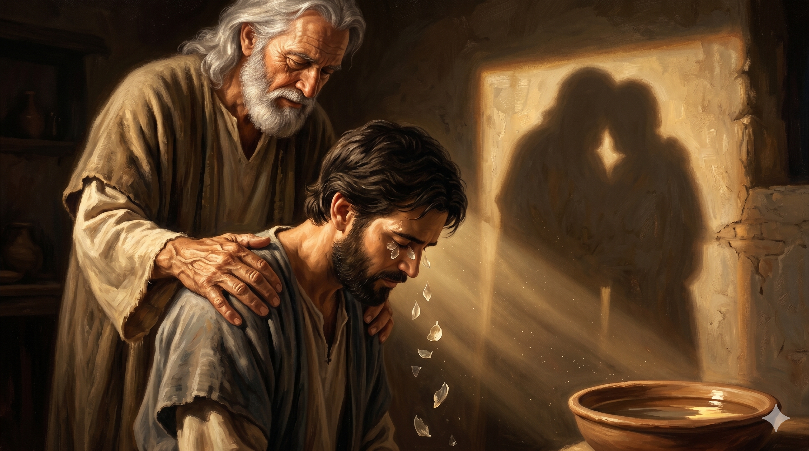

다메섹의 한 좁은 골목길 — "직가(直街)"라 불리는 곧은 거리에 마주한 한 작은 흙벽 집. 창문으로 비껴든 늦은 오후의 황금빛 햇살이 한 늙은 제자 아나니아의 떨리는 손 위에 비친다. 그가 두 무릎 꿇은 한 청년 사울의 머리 위에 두 손을 얹고 있고, 사울의 두 눈에서는 비늘 같은 것이 후두두 떨어진다. 한 사람을 가장 두려워하던 도시가 한 사람을 가장 사랑으로 안아주는 형제로 받아들이는 한 거룩한 정오의 한 장면.
주께서 이르시되 일어나 직가라 하는 거리로 가서 유다의 집에서 다소 사람 사울이라 하는 사람을 찾으라 그가 기도하는 중이니라 … 아나니아가 대답하되 주여 이 사람에 대하여 내가 여러 사람에게 듣사온즉 그가 예루살렘에서 주의 성도에게 적지 않은 해를 끼쳤다 하더이다 … 주께서 이르시되 가라 이 사람은 내 이름을 이방인과 임금들과 이스라엘 자손들에게 전하기 위하여 택한 나의 그릇이라 … 아나니아가 떠나 그 집에 들어가서 그에게 안수하여 이르되 형제 사울아 주 곧 네가 오는 길에서 나타나셨던 예수께서 나를 보내어 너로 다시 보게 하시고 성령으로 충만하게 하신다 하니 — 사도행전 9:11–17(발췌)
다메섹의 한 골목 — "직가(直街)"는 헬라식 도시계획의 한 곧은 동서 대로(Via Recta)였습니다. 이천 년이 지난 오늘도 다메섹 옛 도성에서 그 거리의 흔적을 그대로 찾을 수 있을 만큼 또렷한 한 길입니다. 그 한 거리 위의 한 작은 집, "유다의 집"에 한 청년 사울이 사흘째 눈이 멀어 먹지도 마시지도 않은 채 무릎 꿇고 기도하고 있었습니다(행 9:9). 그분께서 한 늙은 제자 아나니아에게 한 환상으로 한 명령을 내리십니다 — "일어나 직가라 하는 거리로 가서 … 사울이라 하는 사람을 찾으라"(행 9:11). 한 분은 한 사람의 이름과 그가 머무는 한 집의 주소까지 또렷하게 일러주십니다. 그러나 아나니아의 첫 반응은 정직한 한 두려움이었습니다 — "주여 이 사람에 대하여 내가 여러 사람에게 듣사온즉 그가 예루살렘에서 주의 성도에게 적지 않은 해를 끼쳤다 하더이다 … 여기서도 주의 이름을 부르는 모든 사람을 결박할 권한을 대제사장들에게서 받았나이다"(행 9:13–14). 한 사람의 두려움은 결코 비겁한 두려움이 아니었습니다. 그것은 자기 형제들이 흘린 피의 무게를 정확하게 알고 있는 한 정직한 두려움이었습니다.
그 두려움 앞에서 한 분은 한 마디로 그 두려움을 한 사명으로 바꾸십니다 — "가라 이 사람은 내 이름을 이방인과 임금들과 이스라엘 자손들에게 전하기 위하여 택한 나의 그릇이라"(행 9:15). 헬라어 "스큐오스 에클로게스"(σκεῦος ἐκλογῆς)는 "택한 그릇"이라는 뜻 — 곧 자기 손으로 빚어 자기 이름을 담아내실 한 토기였습니다. 한 분은 아나니아의 두려움을 부정하지 않으시고, 다만 그 두려움 너머의 한 사명을 정직하게 보여주십니다. 그러자 한 사람이 일어납니다. "아나니아가 떠나 그 집에 들어가서"(행 9:17). 그 한 발자국이, 사천 년의 신약 교회사의 한 결정적인 한 장면입니다. 그가 그 집에 들어가서 첫 번째 한 마디로 부른 호칭은 우리를 깊이 흔듭니다 — "형제 사울아"(행 9:17, 헬: 사울 아델페). 어제까지 자기 형제들의 피를 흘리던 한 사람을, 오늘 그는 "형제"라고 부릅니다. 그 한 마디 안에는, 한 사람의 두려움이 한 분의 이름 앞에서 형제 사랑으로 녹아 내린 한 거룩한 변형이 담겨 있습니다. 그 한 호칭이, 사울의 두 눈에서 비늘이 떨어지게 한 첫 손길이었습니다.

사울의 두 눈에서 후두두 떨어지는 비늘 같은 것들이 흙바닥 위에 흩어지고, 그 옆에 한 그릇의 물이 놓여 있다. 한 늙은 형제의 두 손이 그 청년의 두 어깨 위에 따뜻하게 얹히고, 두 사람의 그림자가 한 그림자가 되어 흙벽에 길게 새겨진다. 두려움이 형제의 호칭으로, 어둠이 빛으로 바뀌는 한 작은 방 안의 거룩한 침묵.
한 분의 위대한 한 사역은 사실 한 무명의 형제 한 사람이 자기 두려움을 정직하게 통과해 한 발자국 내딛는 그 자리에서 시작됩니다. 아나니아라는 한 늙은 제자가 없었더라면, 사울의 회심도 그 자리에서 한 결말로 멈추었을지 모릅니다. 다메섹 도상의 빛이 한 사람의 가슴을 흔들었다면, 직가의 한 작은 집 안의 한 손길이 그 흔들림을 한 일생의 사명으로 빚어낸 것입니다. 한 분의 사역에는 언제나 두 사람이 필요합니다 — 빛을 직접 마주한 한 사람과, 그 빛을 형제로 받아들이는 또 한 사람. 오늘 당신은 어느 자리에 서 있습니까. 한 사람의 회심이 정말 진짜인지 의심하며, 그를 형제로 받아들이는 일이 두려워 한 발자국을 망설이고 있습니까. 한 분은 그 두려움을 부정하지 않으십니다. 다만 그 두려움 너머에서 그 사람을 위해 예비하신 한 사명을 정직하게 보여주실 뿐입니다. 그 사명을 본 한 사람만이, 두려움을 안은 채로도 한 발자국을 내딛을 수 있습니다.
또 한 가지 — "형제 사울아"라는 한 호칭의 힘을 가볍게 여기지 마십시오. 사람의 회심을 가장 깊이 확인시켜 주는 것은, 신학적인 설득도 아니고 화려한 의식도 아닙니다. 그것은 한 형제의 입에서 처음으로 흘러나온 한 마디 "형제"라는 호칭입니다. 그 한 마디 안에서 한 사람은, 자기가 정말로 그 무리에 받아들여졌다는 한 진리를 가슴 깊이 확신하게 됩니다. 그러므로 오늘 당신의 주변에서 어제까지 다른 길을 걷던 한 사람이 한 분 앞에 무릎 꿇기 시작했다면, 화려한 환영의 행사보다 먼저 한 마디만 정직하게 건네 보십시오 — "형제." 그 한 마디가, 그 사람의 두 눈에 아직 남아 있는 마지막 비늘들을 후두두 떨어뜨리게 하는 한 거룩한 손길이 됩니다. 사천 년 전 직가의 한 작은 방에서 그러했던 것처럼, 오늘도 한 분은 그 한 마디를 통해 한 영혼을 자기 그릇으로 빚으십니다.
한 분의 위대한 사역은, 한 무명의 형제가 두려움을 통과해 내딛은 한 발자국 위에서 시작됩니다.
"형제"라는 한 마디 호칭은, 마지막 남은 비늘을 떨어뜨리는 한 거룩한 손길입니다.
오늘, 어제까지 두려워하던 한 사람을 향해 두 손을 떨며 그 한 마디를 건네 보십시오.